ИС «ЛМК-Контроль» с телефона
Учёт медосмотров, санминимума (гигиенического обучения), прививок и электронных медкнижек сотрудников магазина. Собрано из инструкций системы, обучающих роликов, регламента по ЭЛМК, писем службы охраны труда и проверено в действующей системе. Красной рамкой на картинках выделено то, что нужно нажать или заполнить.
Как работать с телефона
Система одна и та же, на телефоне меняется только расположение. Всё, что ниже, делается с телефона.
- Ярлык. Добавьте ref.hbis.ru на экран «Домой» (раздел 2) — открывается как приложение, работают вход по Face ID и уведомления.
- Меню — кнопка ☰ в левом верхнем углу. Пункты идут длинным списком: Справочники, Документы, Отчёты, Сервис. Список прокручивается пальцем, закрыть — ☰ ещё раз.
- Таблицы и формы шире экрана — листайте пальцем вбок. Например, кнопка «Подписать» в направлении стоит правее остальных.
- Карточка сотрудника длинная. В самом низу, под кнопками, — список документов с «+» (Медосмотр, Санминимум, Перевод, Мед.данные…). На компьютере этот список справа.
- Мелко? Разведите двумя пальцами — страница увеличится. Поля с «…» открывают выбор из списка.
- Печать с телефона: в окне печати нажмите «PDF» — файл можно переслать или распечатать позже.
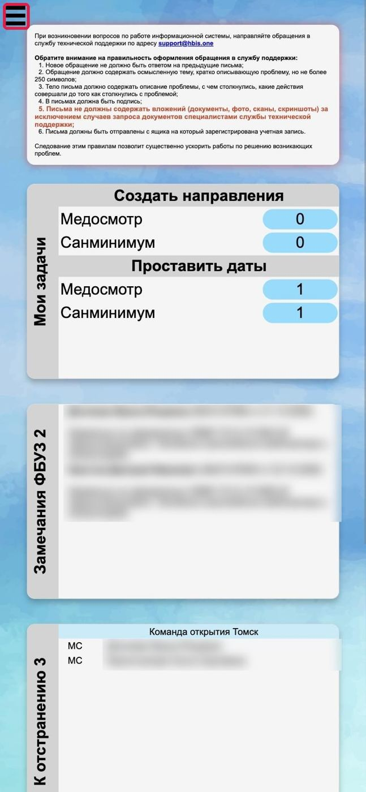
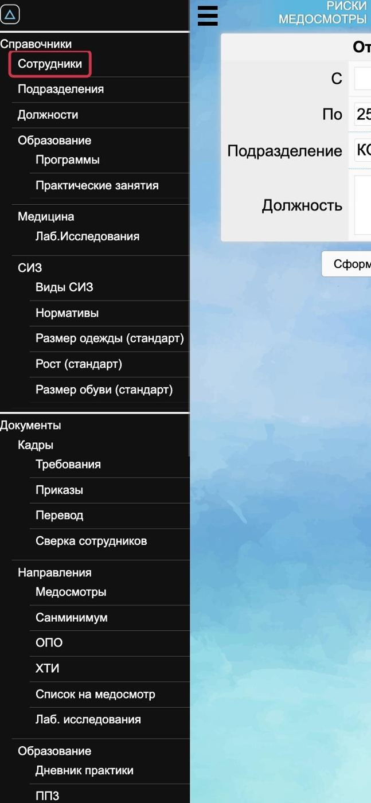
1. Первый шаг — карточка сотрудника
Внимание! «Мобильные кадры» проверяют в ИС «ЛМК-Контроль» даты допуска по медосмотру и санминимуму. Без карточки сотрудника в ЛМК нельзя ни выдать направления, ни получить допуск, а без допуска не получится трудоустроить в МК.
Где создать карточку
- ☰ → «Справочники» → «Сотрудники».
- Сначала найдите сотрудника поиском по фамилии в столбце «Фамилия» → «Фильтр»: может быть, он уже заведён (например, раньше работал у нас).
- Нет в списке — нажмите «Создать».
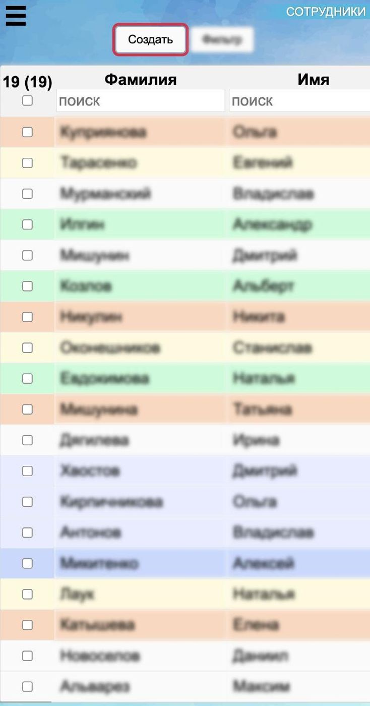
Как заполнить карточку
Красной рамкой — обязательные поля: без них карточка не сохранится.
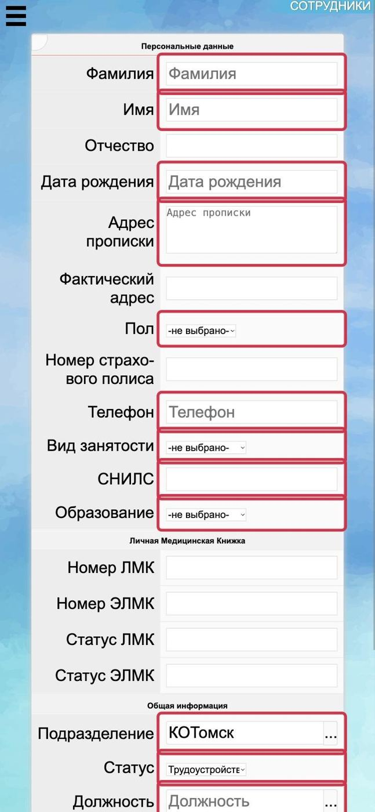
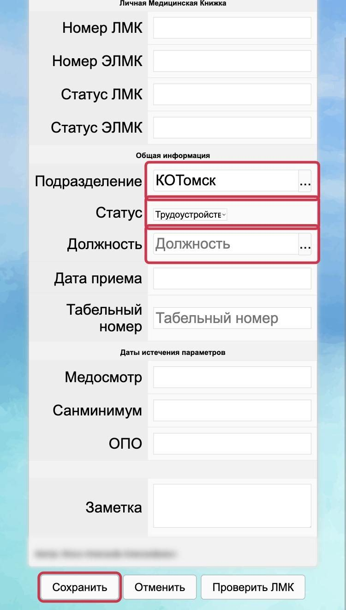
| Поле | Обязательно | Как заполнять |
|---|---|---|
| Фамилия, Имя | да | Как в паспорте. Система подсказывает варианты — можно выбрать из списка. |
| Отчество | нет | Если есть — заполнить обязательно, иначе ФИО не совпадёт с Госуслугами и ЭЛМК. |
| Дата рождения | да | ДД.ММ.ГГГГ, можно цифрами подряд: 01011990. |
| Адрес прописки | да | Как в паспорте. |
| Фактический адрес | нет | Через подсказки справочника адресов (ниже). |
| Пол | да | Из списка. |
| Телефон | да | Мобильный сотрудника — на него приходят СМС (подпись направлений в Томске). |
| Вид занятости | да | «Полная» или «Совместительство». |
| СНИЛС | да | 11 цифр. Нужен для ЭЛМК и передачи данных из медцентра. |
| Образование | да | Из списка. |
| Номер ЛМК | нет | Номер бумажной книжки, только если она есть и замена не нужна. Нет книжки или нужна новая — пусто. |
| Номер / статус ЭЛМК, статус ЛМК | — | Заполняются системой сами. |
| Подразделение | да | Подставится ваше. Другое — через «…». |
| Статус | да | Ставим «Трудоустройство» (система подставляет сама — не меняйте). |
| Должность | да | Через «…» из справочника должностей. |
| Дата приёма, Табельный номер | нет | По данным МК, когда сотрудник принят. |
| Медосмотр, Санминимум, ОПО | — | В новой карточке недоступны: даты придут из направлений или через «Проверить ЛМК». |
Нажмите «Сохранить» — появится «Данные сохранены». Дальше — прививки (раздел 8) и направления (раздел 6).
«Сохранение невозможно!» — значит, сотрудник уже числится в другом магазине. В этом же окне нажмите «Запрос на перевод» (раздел 5).
Для нового магазина
- Пока у управляющего нового магазина нет доступа в ЛМК, карточку создают и направления выдают на действующем магазине (руководитель команды открытия или управляющий действующего магазина).
- Сотрудники проходят медосмотр и санминимум до приёмки магазина и приходят на открытие уже с допусками — только трудоустроиться.
- В первый день открытия на почту нового магазина приходит письмо с логином и паролем (раздел 2).
- В новом магазине запрашиваем перевод сотрудников из действующего (раздел 5). МК допустят к трудоустройству и без перевода — главное, чтобы были даты допусков; перевод нужен, чтобы сотрудник числился и контролировался в вашем магазине.
- Заказываем журналы по охране труда (раздел 11).
Повторное трудоустройство. Если сотрудник уволился и снова устраивается к нам (даже на ту же должность через пару месяцев), предварительный медосмотр проходится заново. Основание: ТК РФ ст. 220 и 215 (письмо службы охраны труда от 06.08.2026).
Работа с системой по кругу
- Сотрудники — все ли есть, уволенным статус «Уволенный».
- Прививки и даты — внесены ли «Мед.данные», есть ли сроки медосмотра и санминимума.
- Мониторинг — за 30 дней до окончания срока придёт письмо; то же в виджетах и отчётах.
- Направление на медосмотр или санминимум.
- Результат — следим за «Комментарием» направления, даты подтянутся сами; если нет — «Проверить ЛМК» или вручную.
2. Первый вход и настройка телефона
Письмо с логином и паролем
В день назначения на почту магазина приходит письмо от hbis.one с темой «ОТИСα. Добро пожаловать в нашу семью» (с пометкой «Письмо от внешнего отправителя» — это нормально). В нём логин (обычно код магазина маленькими буквами, например pr01), пароль, должность и подразделение.
- Откройте ref.hbis.ru (именно .ru).
- Введите логин и пароль из письма → «Войти».
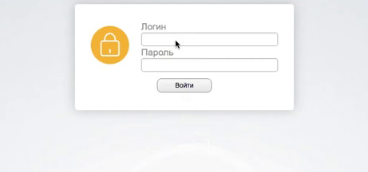
Не сохраняйте пароль в браузере. Разработчик системы не рекомендует это из-за краж сохранённых паролей. Для быстрого входа настройте вход по Face ID / отпечатку.
Ярлык на экран «Домой»
Входить в учётную запись не обязательно — всё делается на странице входа. iPhone — Safari, Android — Google Chrome.
iPhone
- Откройте ref.hbis.ru в Safari.
- «Поделиться» (квадрат со стрелкой; в новых версиях сначала «•••»).
- «На экран „Домой“» → «Добавить».
Android
- Откройте ref.hbis.ru в Chrome.
- «⋮» справа вверху.
- «Добавить на главный экран» → «Добавить».
Вход по Face ID / отпечатку
- Войдите логином и паролем.
- ☰ → «Сервис» → «Регистрация ключа авторизации».
- Подтвердите Face ID / отпечаток по подсказкам телефона.
Для информации: при запуске ярлыком система сама предложит войти по ключу. В браузере — значок замка в окне входа.
Уведомления (PUSH)
Система присылает уведомления о смене статусов документов: переводы, направления, сроки. На телефоне — только с ярлыка.
- ☰ → «Сервис» → «Сообщения», примите соглашение (если ещё не принимали).
- Нажмите колокольчик в левом верхнем углу окна → разрешите уведомления.
Колокольчик станет зелёным. Делается на каждом устройстве отдельно; повторное нажатие — отписка.
3. Главный экран и меню
| Виджет | Что показывает |
|---|---|
| Мои задачи | «Создать направления» — кому пора выдать направление. «Проставить даты» — по каким направлениям не внесены результаты. |
| Замечания ФБУЗ | Ход оформления ЭЛМК и замечания ФБУЗ по каждому направлению (как исправить). |
| К отстранению | Сотрудники без действующих допусков. |
| Всего | Штат (зелёный), «Истекает срок действия» в ближайшие 30 дней (голубой), «Просрочено» (оранжевый) — по медосмотру, санминимуму и ОПО. Нажмите на цифру — откроется список. |
Внимание! Направления на медосмотр, созданные из окна виджета, всегда «Периодические». Новому сотруднику нужен «Предварительный» — создавайте из карточки.
Пункты меню
| Меню | Что внутри |
|---|---|
| Справочники | «Сотрудники» — ваши сотрудники; «Подразделения», «Должности» — для выбора. |
| Документы | «Кадры» → Перевод; «Направления» → Медосмотры, Санминимум, ОПО (списки для просмотра и печати); «Образование» → ППЗ; «Охрана труда» → Запрос журналов; «Мед.данные». |
| Отчёты | «Риски медосмотры», «Направления на медосмотр», «Риски санминимум», «Направления на санминимум», «Просроченные», «Карточка подразделения». |
| Сервис | Справка, Сообщения, Заметки, Корзина, Почта, Получить ЭП, Доступ по QR, Регистрация ключа авторизации (раздел 14). |
4. Карточка сотрудника: документы и статусы
Откройте сотрудника из справочника. Вверху — сроки действия допусков, в самом низу — список связанных документов с кнопками «+». Через «+» создаются направления, перевод и «Мед.данные».
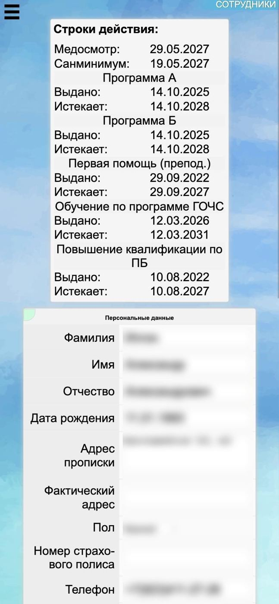
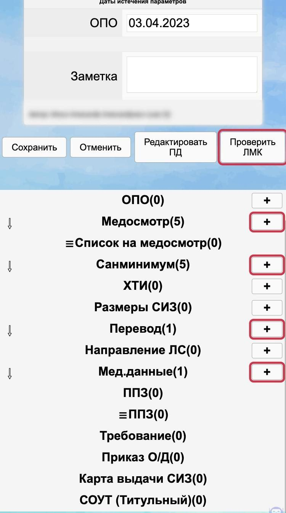
Кнопка «Проверить ЛМК»
Внизу карточки. Открывает меню: «Проверка», «Сканировать QR», «Проверка ЭЛМК» (подтянуть данные из ЭЛМК), «Проверить подачу заявления» (подал ли сотрудник заявление и в какой ФБУЗ).
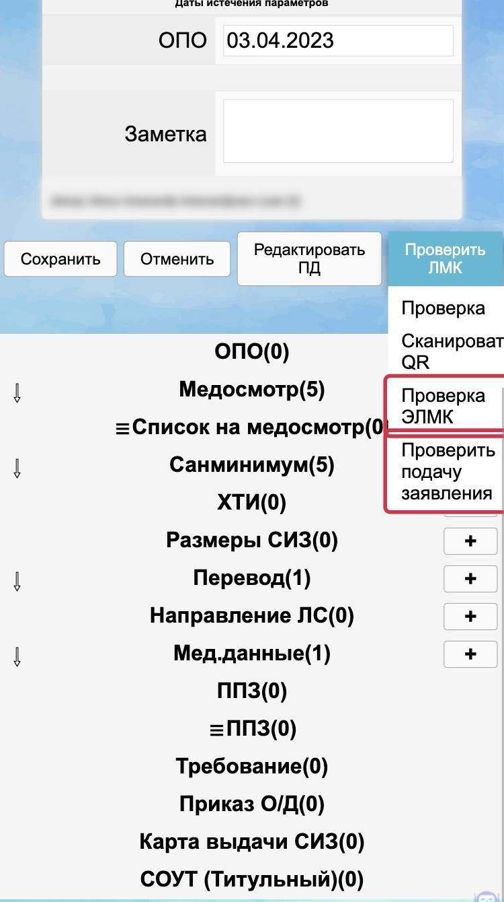
Увольнение, декрет, возврат
- Откройте карточку → «Статус»: «Уволенный» (уволился или ушёл в другой магазин), «Декрет», «Больничный», «Отстранен» и др. → «Сохранить».
- Сотрудник уйдёт из штата, виджетов и писем, карточка останется. Вернулся — верните «Работающий», заново не заводите. Удалять сотрудников не нужно.
Ввод адреса по справочнику
- Начните вводить регион (например, «Томская обл») → выберите строку из подсказки.
- Через запятую: город, улица, дом — каждый раз выбирайте строку из подсказки.
5. Перевод сотрудника между магазинами
Чужие сотрудники в вашем справочнике не видны. После согласования сотрудник появится у вас со всеми документами и сроками. Статусы: «На согласовании» → «Согласовано» или «Отказано».
Отправить своего сотрудника в другой магазин
- Карточка сотрудника → «+» напротив «Перевод».
- «Прибытия» → «…» → найдите магазин по коду → отметьте → «Выбрать».
- Нажмите «В работу». Пока не нажата — второй магазин перевод не видит.
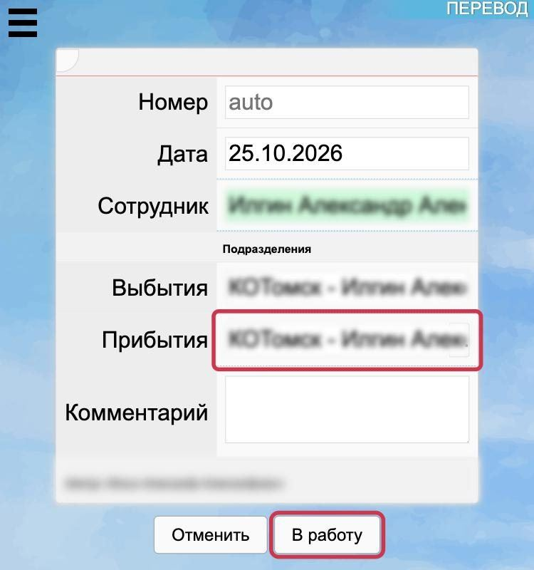
Забрать сотрудника из другого магазина к себе
- Справочник «Сотрудники» → «Создать» → ФИО, дата рождения и остальные обязательные поля → «Сохранить».
- Появится «Сохранение невозможно!» — «Указанный сотрудник числится в подразделении …» → нажмите «Запрос на перевод».
- «Документ создан!» — ждите: управляющий прежнего магазина согласует, вам придёт письмо. Долго нет ответа — позвоните ему.
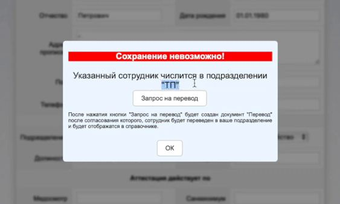
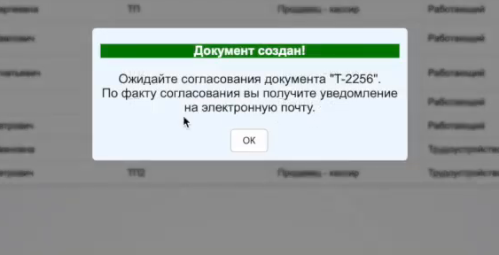
6. Направления: медосмотр и санминимум
Направления создаются из карточки сотрудника (кнопка «+») или из виджета на главном экране (только периодические). В «Документы → Направления» — только списки с «Фильтром», кнопки «Создать» там нет. Даты «Дата прохождения / Действует по» при выдаче не заполняются.
Приоритет — электронная медкнижка (ЭЛМК). Всех сотрудников оформляем и переводим на ЭЛМК: в направлении на медосмотр «Тип ЛМК» = «ЭЛМК», в направлении на санминимум (гигтест) «Услуги» = «ЭЛМК». Бумажные варианты — только если ЭЛМК оформить невозможно.
Порядок: сначала медосмотр (рекомендуется), потом гигиеническое обучение. На медосмотр сотрудник берёт паспорт, направление и прививочный сертификат.
Медосмотр
- Карточка → «+» напротив «Медосмотр».
- Вид осмотра: «Предварительный» — при приёме (в том числе повторном); «Периодический» — работающим.
- Тип ЛМК: «ЭЛМК» (в приоритете; «Бумажная» — только в исключительных случаях).
- Мед. центр: нажмите «…» и выберите свой медцентр, который проводит медосмотры в вашем городе → «Выбрать». По умолчанию стоит томский.
- «Сохранить» → «Печать». Распечатайте, подпишите, выдайте сотруднику.
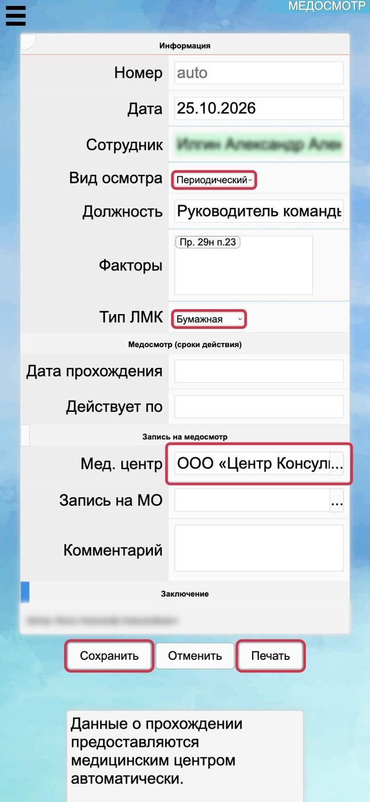
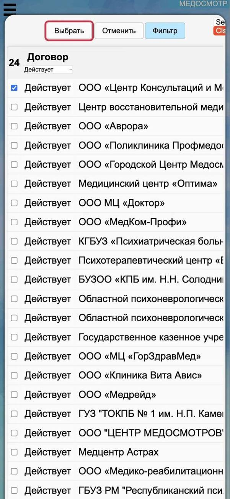
Для информации: в списке медцентров много организаций по всем регионам (листайте вниз или ищите по полю «Адрес»). Выберите свой медцентр, который проводит медосмотры в вашем городе. Не знаете какой — уточните у службы охраны труда. Бумажное направление действительно 14 календарных дней.
Санминимум (гигобучение) с ЭЛМК
- Карточка → «+» напротив «Санминимум».
- Услуги: «ЭЛМК» — всегда в приоритете (бумажные варианты — только в исключительных случаях).
- ФБУЗ: «…» → ФБУЗ «Центр гигиены и эпидемиологии в Томской области» → «Выбрать» (обычно уже стоит).
- «Сохранить», откройте снова → «Подписать» → «ЭП пользователя» (подробно в 9.1).
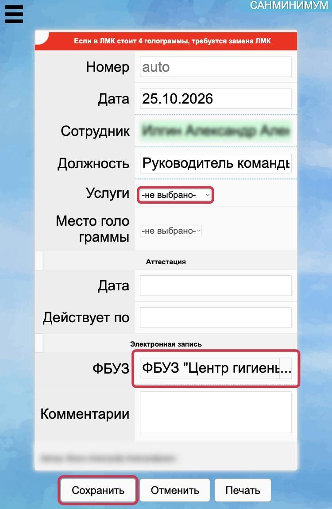
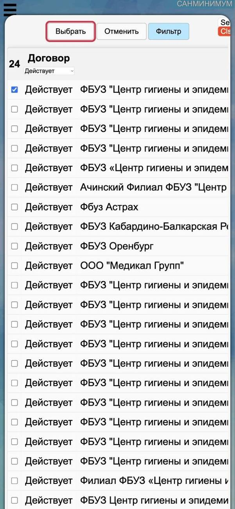
Поле «ЛМК» и голограммы. Если в бумажной книжке 4 голограммы или пометка «Заменить» — нужна замена книжки (поле «ЛМК» в направлении пустое). Не пишите в «ЛМК» слова «требуется / не требуется».
ОПО — психиатрическое освидетельствование
НЕ ВЫДАВАТЬ направления на ОПО!
Уже несколько лет ОПО — необязательный документ. При направлении на медосмотр направление на ОПО не создаём и не выдаём — до особого распоряжения. Кнопку «+» напротив «ОПО» в карточке не нажимайте.
Уже несколько лет ОПО — необязательный документ. При направлении на медосмотр направление на ОПО не создаём и не выдаём — до особого распоряжения. Кнопку «+» напротив «ОПО» в карточке не нажимайте.
Электронное направление с подписью сотрудника — ТОЛЬКО ТОМСК
ТОЛЬКО ТОМСК!
Подписание направления через СМС сотруднику и медосмотр без бумажного направления — только в Томске, в «Центре Консультаций и Медицинских Осмотров». В остальных городах бумажное направление обязательно: распечатать, подписать, выдать сотруднику.
Подписание направления через СМС сотруднику и медосмотр без бумажного направления — только в Томске, в «Центре Консультаций и Медицинских Осмотров». В остальных городах бумажное направление обязательно: распечатать, подписать, выдать сотруднику.
- Сохраните направление на медосмотр → «Подписать» → «ЭП сотрудника». Сотруднику придёт СМС с кодом и ссылкой (номера +7 (913) 888-20-01 … 05).
- Сотрудник открывает ссылку, ставит галочку «Я ознакомился…», вводит код.
- Снова «Подписать» → «ЭП пользователя». В клинике сотрудник показывает QR-код по той же ссылке.
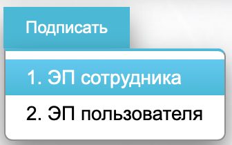
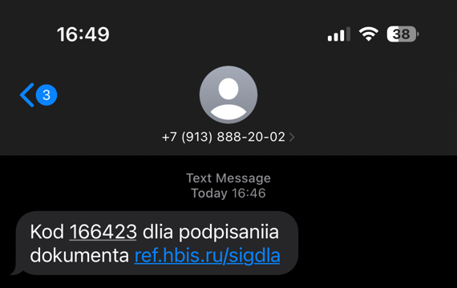
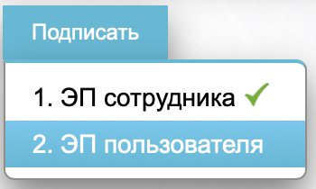
Печать и PDF
Один документ: открыть → «Печать». Несколько: в списке отметить галочками → «Печать». В окне просмотра — «Печать» или «PDF».
7. Результаты: даты, комментарии, СЭМД
Следите за «Комментарием» направления
Весь ход оформления пишется в поле «Комментарии» направления на санминимум и в виджете «Замечания ФБУЗ». Даты аттестации и сроки загружаются сами при завершении оформления ЭЛМК. Найти направление: «Документы → Направления → Санминимум» → номер в поиске → «Фильтр».
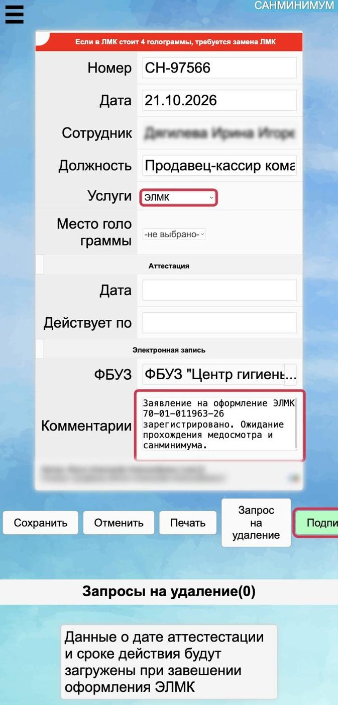
СЭМД — держите на контроле
Передача СЭМД затягивается. СЭМД — электронный документ медцентра о пройденном медосмотре; пока медцентр не передаст его в ЕГИСЗ, ЭЛМК не оформят. Раз в 1–2 дня проверяйте «Комментарии» направления на санминимум. «Ожидание информации о медицинском осмотре» дольше нескольких дней — сотрудник идёт в медцентр с требованием передать СЭМД в ЕГИСЗ и просит полный номер: 230.ХХ.ГГ.ММ.NNNNNNNNN. В ФБУЗ звонить не нужно.
«Проверить ЛМК» — когда даты не пришли
СУПЕРВАЖНО! Если ЭЛМК оформлялась без направления на санминимум (новый медосмотр, а аттестация действующая) — данные о медосмотре автоматически НЕ придут. После получения ЭЛМК: карточка → «Проверить ЛМК» → «Проверка ЭЛМК» → «Перенести».
Вручную по бумажной книжке
Медосмотр
Раздел V «Заключение врача о допуске к работе»: слева дата прохождения, в штампе — действует до. В направлении внесите «Дата прохождения» — «Действует по» подставится сам (+1 год).
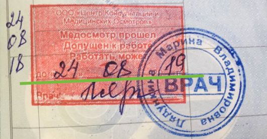
Санминимум
Стр. 28, «Профессиональная гигиеническая подготовка»: слева дата аттестации, в штампе — следующая. Вносите оба поля вручную (бывает на 1 и на 2 года).
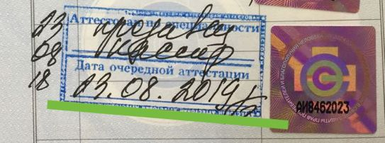
Частые ошибки: «Дата прохождения не может быть ранее даты документа!» и «… позднее текущей даты!» — проверьте дату.
8. Прививки (документ «Мед.данные»)
Без прививок ЭЛМК не оформят. Внесите прививки до оформления медкнижки. На медосмотр сотрудник берёт прививочный сертификат.
Какие прививки нужны работникам торговли
| Прививка | Кому | Схема |
|---|---|---|
| Гепатит B | 18–55 лет, не привитые | 3 дозы: 0–1–6 месяцев |
| Корь | 18–35 лет; торговля — до 55 | 2 прививки — ничего; 1 — ещё одна; нет сведений — 2 с интервалом ≥ 3 мес. |
| Краснуха | Женщины 18–25 лет | Не привитые / однократно / без сведений — прививка |
| Дифтерия, столбняк | С 18 лет | Каждые 10 лет |
| Грипп | Работники торговли | Ежегодно |
По эпидпоказаниям: шигеллёз (дизентерия), гепатит A, брюшной тиф. Основание — национальный календарь прививок (приказ Минздрава № 1122н).
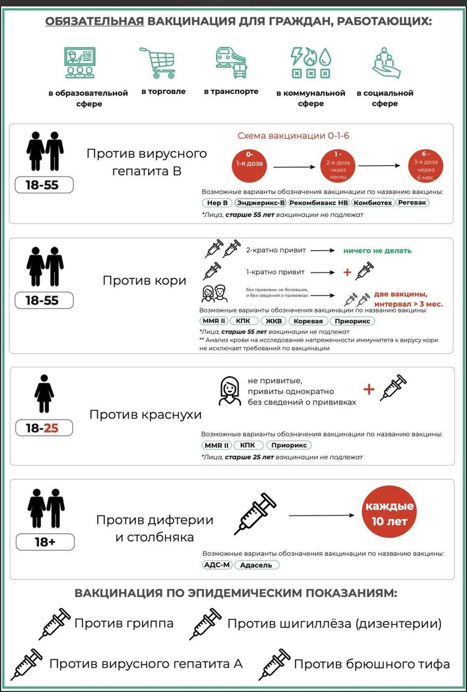
Как внести прививки
- Карточка → «+» напротив «Мед.данные».
- В документе нажмите «+» над таблицей.
- «Показатель» → «…» → отметьте прививку → «Выбрать». Дозы гепатита B и кори — отдельными строками «(1д)», «(2д)».
- «Дата события» — дата из сертификата → «Сохранить». Повторите для каждой прививки.
- «Сохранить» документ.
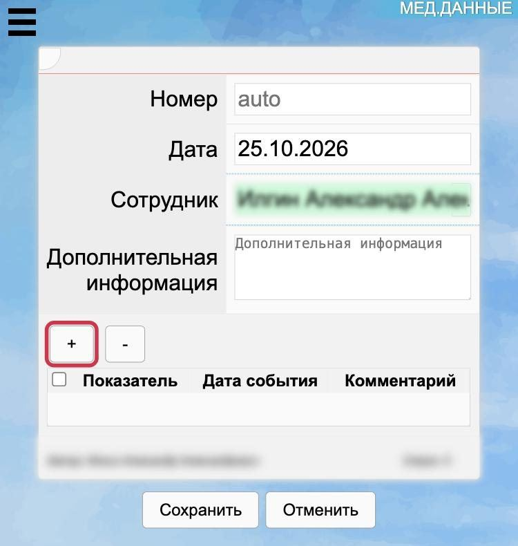
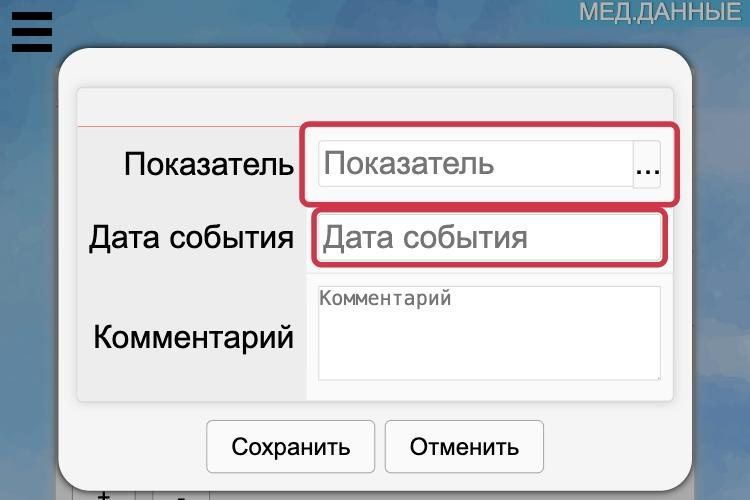
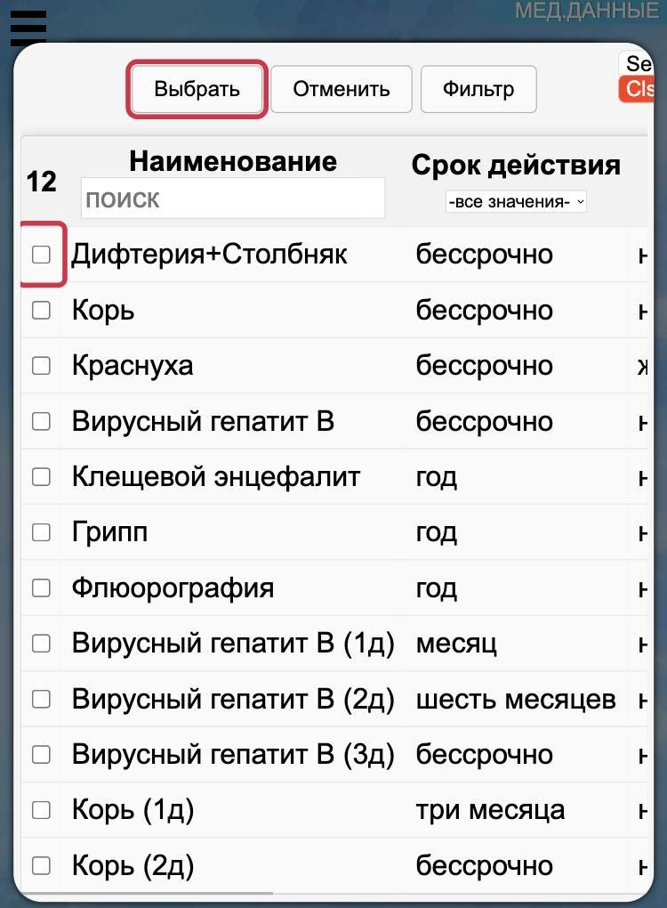
Документ «Мед.данные» нельзя изменить или дополнить. После сохранения он «Обработан». Новые прививки — новым документом через «+».
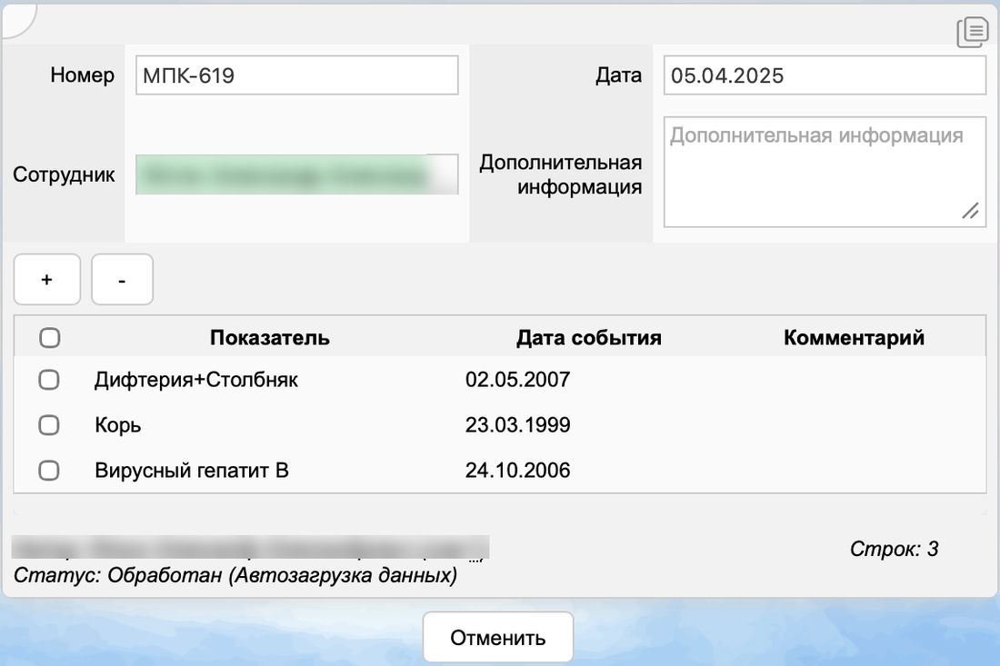
9. Электронная медкнижка (ЭЛМК)
Участвуют двое: Управляющий — в ИС «ЛМК-Контроль», Сотрудник — на Госуслугах и Гигтесте. Обычный случай (новый сотрудник или истекли оба допуска):
1. Управляющийкарточка, прививки, медосмотр с типом «ЭЛМК», санминимум с услугой «ЭЛМК», подпись ЭП
2. Сотрудникмедосмотр: паспорт, направление, прививочный сертификат
3. Сотрудникзаявление «Оформить медкнижку» на Госуслугах
4. Сотрудникаттестация на gigtest.ru, «Сдан»
5. Управляющийследит за «Комментарием», СЭМД и замечаниями ФБУЗ
9.1. Шаги управляющего
- Направление на санминимум: «Услуги» = «ЭЛМК», «ФБУЗ» = Томская область → «Сохранить».
- Откройте направление → «Подписать» → «ЭП пользователя» → пароль. На телефоне кнопка правее — сдвиньте экран вбок.
- Проверьте значок подписи с зелёной отметкой в правом нижнем углу.
- Передайте сотруднику шаги 9.2 и 9.3 (можно ссылкой на эту страницу).
Нет кнопки «Подписать»? ☰ → «Сервис» → «Получить ЭП» → по указаниям системы. Затем снова «Подписать» → «ЭП пользователя».
9.2. Шаги сотрудника: Госуслуги
- Госуслуги → поиск «ЭЛМК» → «Оформить медкнижку» → «Начать».
- Если ЭЛМК уже была — «Внести изменения в личную электронную медкнижку», причина «Продление».
- Проверьте ФИО, телефон, почту, адрес регистрации → «Верно». Фактический адрес — «Да», если совпадает.
- Виды работ — ТОЛЬКО: «Работы, при выполнении которых осуществляется контакт с пищевыми продуктами в процессе их производства, хранения, транспортировки и реализации» → «Продолжить».
- Виды продукции — ВСЕ, КРОМЕ «Организация питания детей и подростков» → «Продолжить».
- Регион «Томская область», галочка «Подать во ФБУЗ» → «Отправить заявление».
9.3. Шаги сотрудника: Гигтест
- gigtest.ru → «Вы можете войти через Госуслуги» → «Продолжить».
- Регион «Томская область» → ФБУЗ «Центр гигиены и эпидемиологии в Томской области», Томск, Елизаровых 56. Уже был зарегистрирован — «Профиль» → этот ФБУЗ → «Изменить».
- «Гигиеническое обучение работников продовольственной торговли» → «Оплата в кассе».
- Лекции → «Начать тест (Основной экзамен)». В протоколе — «Сдан», иначе пересдать.
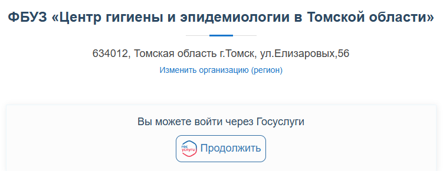
9.4. Особые случаи
| Ситуация | Управляющий | Сотрудник |
|---|---|---|
| Аттестация действует, истёк медосмотр | Только направление на медосмотр. После ЭЛМК — «Проверить ЛМК» → «Проверка ЭЛМК» → «Перенести». | Медосмотр. Заявление в ФБУЗ последней аттестации, через пару часов звонок туда: «внесите в ЭЛМК действующую аттестацию». Бесплатно. |
| Медосмотр действует, истёк санминимум | Направление на санминимум с «ЭЛМК», подписать. | Госуслуги + Гигтест. Медосмотр из бумажной книжки — через медцентр (передача СЭМД). |
| ЭЛМК есть, прошли новый медосмотр / санминимум | После переоформления — «Проверка ЭЛМК» → «Перенести». | Заявление на переоформление (продление), не новое. |
| ЭЛМК в другом регионе | «Проверить ЛМК» → «Проверка ЭЛМК». | — |
9.5. Замечания ФБУЗ и как их исправить
| Замечание | Кто | Что сделать |
|---|---|---|
| Виды работ не позволяют продолжить оказание услуг | Сотрудник | Отозвать заявление и подать заново (9.2, пункты 4–5). |
| Услуги в направлении не позволяют оформить ЭЛМК | Управляющий | «Услуги» = «ЭЛМК» → подписать. |
| Отсутствует заявление на оформление ЭЛМК | Сотрудник | Подать заявление. Проверка: «Проверить ЛМК» → «Проверить подачу заявления». |
| Документ не подписан ЭП | Управляющий | Открыть направление → «Подписать». |
| Ожидание информации о медицинском осмотре | Сотрудник | Медцентр должен передать СЭМД в ЕГИСЗ (раздел 7). |
| Заявление зарегистрировано. Ожидание медосмотра и санминимума | — | Не ошибка: ждём медосмотр и аттестацию. |
10. Отчёты
☰ → «Отчёты» → отчёт (например, «Риски медосмотры») → период, подразделение → «Сформировать» → «Печать» или «PDF».
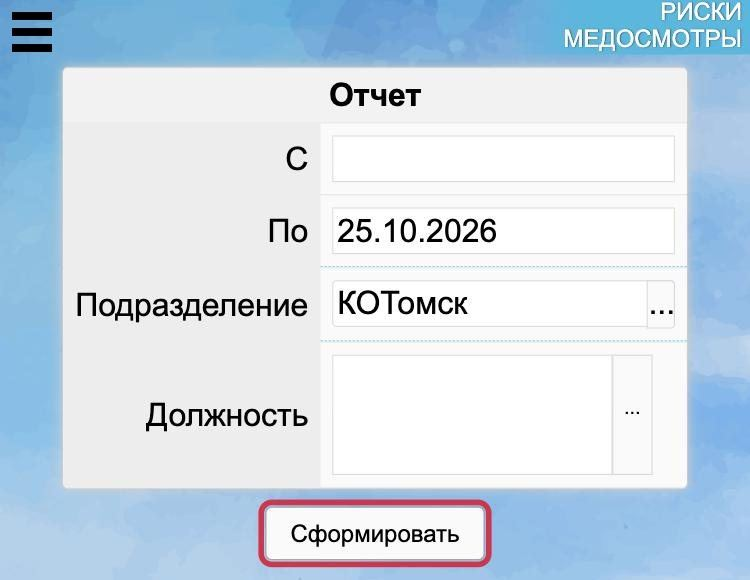
11. Запрос журналов по охране труда
Обязательно при открытии нового магазина.
- «Документы» → «Охрана труда» → «Запрос журналов» → «Создать».
- Нажмите «+» → «Тип журнала»: «Журнал регистрации вводного инструктажа ОТ», «Журнал учета регистрации инструктажа на рабочем месте», «Электробезопасность». «Причина»: для нового магазина — «новое ОСП» (ещё: закончился, утрачен, испорчен) → «Сохранить». Повторите для каждого журнала.
- Нажмите «В работу».
- Когда пакет придёт в магазин — откройте документ → «Принять».
Аптечки не заказывать — в списке помечено «временно не поставляется».
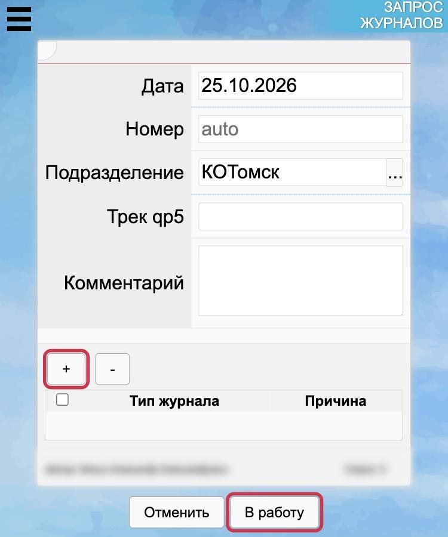
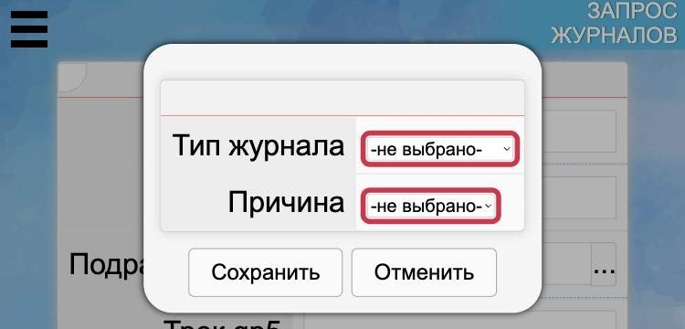
Статусы: Запрошено → Отправлено → Принято (бывают «Отказано», «Уточнение»).
12. Протоколы проверки знаний ОТ (ППЗ)
Протоколы готовит служба охраны труда (Павлова А.В.) и регистрирует в Минтруде. При статусе «Подтвержден МТ» вам придёт письмо.
- «Документы» → «Образование» → «ППЗ» (или строка «ППЗ» в карточке сотрудника) → откройте протокол.
- «Печать» → «Получен исполнителем».
- Сотрудники подписали → «Подписан сотрудниками».
- Отправили оригинал членам комиссии → «Оригинал отправлен».
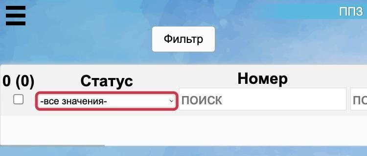
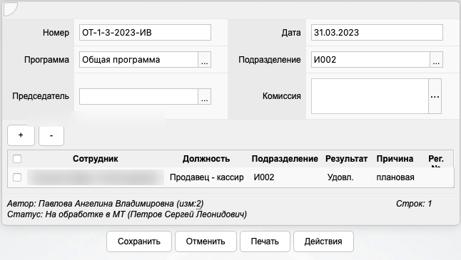
Статусы: Создан → На обработке в МТ → Подтвержден МТ → Получен исполнителем → Подписан сотрудниками → Отправлен → Документооборот завершен.
13. Письма от системы на почту
| Письмо о чём | Что сделать |
|---|---|
| Через 30 дней истекает медосмотр / санминимум | Выдать направление. Письма идут, пока не пройдёт. |
| Изменения по направлениям, ЭЛМК, замечания ФБУЗ | Проверить «Комментарий», устранить замечание. |
| Перевод: запрос, согласование, отказ | Согласовать / проверить сотрудника в справочнике. |
| Запрос журналов: отправлено | Получить пакет → «Принять». |
| ППЗ: «Подтвержден МТ» | Распечатать, отметить статусы. |
14. Раздел «Сервис»
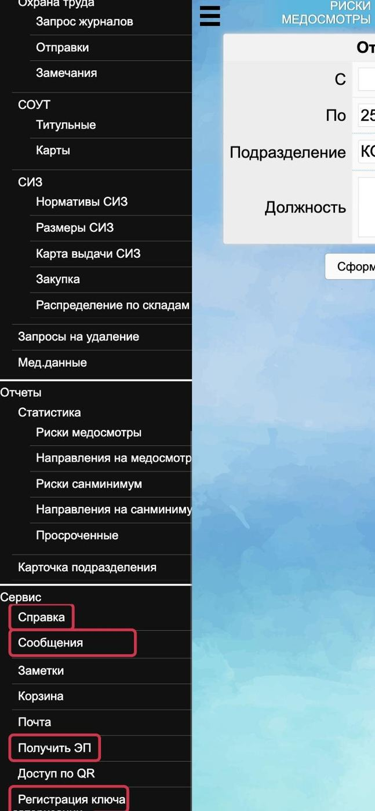
| Пункт | Зачем |
|---|---|
| Справка | Все инструкции системы и обучающие ролики: алгоритм, инструкция ИС, пошаговая инструкция, регламент ЭЛМК, ролики. |
| Сообщения | «Быстрые сообщения» — переписка с пользователями системы; колокольчик — подписка на PUSH. |
| Заметки, Корзина, Почта | Личные заметки, удалённые записи, письма системы. |
| Получить ЭП | Электронная подпись пользователя — нужна для «Подписать» в направлениях. |
| Доступ по QR | Вход на другом устройстве по QR-коду. |
| Регистрация ключа авторизации | Вход по Face ID / отпечатку (раздел 2). |
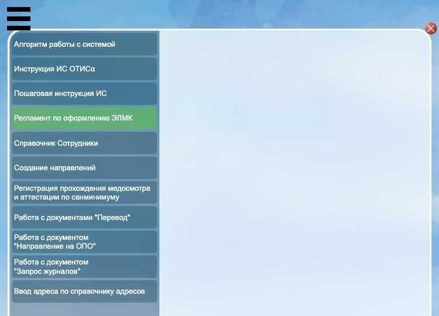
15. Техподдержка и вопросы
Сначала — «Сервис» → «Справка». Техподдержка ИС (сбои, ошибки): support@hbis.one
- Каждое обращение — новое письмо, не ответ на старое. По текущей заявке — «Ответить», свой текст в начало.
- Осмысленная тема до 250 символов. «СРОЧНО», «ПОМОГИТЕ», «МАГАЗИН Т199» — низкий приоритет.
- Что случилось и что делали до этого.
- С корпоративной почты, на которую зарегистрирована учётная запись.
- Без вложений — фото и скриншоты только по запросу поддержки.
- Подпись: ФИО, должность, № ОСП, адрес, почта, телефоны.
Образец подписи
С уважением, управляющий магазиномИванова Мария
г. Новосибирск, ул. Попова, 17, ОСП №Н222
e-mail: N222@ya-retail.ru
тел. моб.: 8-952-000-00-00
Методические вопросы (медосмотры, ЭЛМК, журналы, ППЗ) — служба охраны труда: Павлова Ангелина Владимировна, av.pavlova@ya-retail.ru, (3822) 706-747 доб. 3234.
16. Обучающие ролики
Сняты на старой версии: внешний вид отличается, кнопка «В путь» теперь «В работу».
- Справочник «Сотрудники» · 9 мин
- Создание направлений · 11 мин
- Регистрация медосмотра и санминимума · 9 мин
- Документ «Перевод» · 2,5 мин
- Запрос журналов · 2 мин
- Ввод адреса по справочнику · 1,5 мин